Hello, I'm
Rashmi Bhat Kekanaje
I'm
I'm a Data Scientist at Micron Technology with 3+ years building production ML systems at scale. With 5+ years of overall experience across semiconductors, telecom, and embedded systems, I specialize in LLM-powered solutions, real-time prediction systems, and forecasting tools adopted as core planning systems.
My work focuses on turning complex data into actionable insights—with a strong emphasis on usability, reliability, and real-world impact. I'm currently pursuing my M.S. in Artificial Intelligence at NTU Singapore (part-time).
Work Experience
My professional journey and career achievements in the field of data science and machine learning
Data Scientist
- ▸ Combined Impact: $300M+ annual value across inventory dashboards (lot tracking, hold lot, PRISM, eng wafer reuse).
- ▸ AI/ML Leadership: Facilitate weekly AIML Cohort for entire STPG IE team, 1:1 mentoring on Snowflake, Tableau, ML scoping. Published Quick Reference Guide. Mentored 5 specially abled students (TAP 2025) on industry-ready projects.
PRISM AI Platform
- ▸ Challenge: High NPI wafer material unconsumed (~10%), creating COGS exposure. Data fragmentation across SAP, Snowflake, Global WIP made root-cause analysis difficult.
- ▸ Solution: Built PRISM AI—interactive web dashboard with Claude Sonnet 4 chatbot on AWS Bedrock for natural language inventory queries.
- ▸ Reduced unconsumed inventory by 30%, preventing significant COGS exposure.
Lot Tracking ML System
- ▸ Engineered step-positioning feature encoding lot journey, achieving 87%+ accuracy on 15,000+ daily predictions.
- ▸ Deployed live Streamlit dashboard consolidating cross-site data into single source of truth.
Wafer Forecasting
- ▸ Achieved 90%+ accuracy with 40% cross-product improvement.
- ▸ Dashboard adopted by Business Units as core planning tool for revenue and assembly decisions.
Software Engineer
- ▸ Developed and deployed a large-scale telecom order processing service using Java, SpringBoot, SQL, and MongoDB.
- ▸ Analyzed customer order patterns and resolved system bottlenecks, improving performance by 30%.
- ▸ Built CI/CD pipelines that improved software release reliability and reduced deployment time.
Software Development Intern
- ▸ Designed and implemented internal CAD tools to check consistency across Physical IP configurations (Memory, Std-Cells).
- ▸ Translated C to Java to validate interpolation logic used for simulation of timing, power, and leakage characteristics.
- ▸ Developed variation data mining tools that helped reduce simulation time, turnaround time (TAT), and CPU costs for memory designers.
- ▸ Ensured consistency of configuration settings for Physical IP delivery, reducing risk in final silicon tape-outs.
My Skills
Here you will find information about my skills and technologies I'm experienced with
Machine Learning & LLMs
I build production ML systems and LLM-powered solutions delivering measurable business impact.
- Python & PyTorch
- Scikit-learn & XGBoost
- Claude Sonnet 4 & AWS Bedrock
- LoRA & Adapters
- Multi-agent Systems
- ARIMA & Random Forest
Computer Vision & NLP
I develop CV and NLP systems for image analysis, segmentation, and language understanding.
- OpenCV & Semantic Segmentation
- CRF & ResNet
- CNNs & Transformers
- RNN/LSTM/GRU & Seq2Seq
- Attention Mechanisms
- Image Classification
Data Engineering & Analytics
I design data pipelines and create actionable dashboards for business intelligence.
- SQL & Snowflake
- ETL & Pandas
- Tableau & Power BI
- Streamlit & Flask
- Docker & Git
- CI/CD Pipelines
Education
My academic background and qualifications in technology and artificial intelligence
M.S. Artificial Intelligence
B.E. Information Science
My Projects
Here you will find some of my technical projects showcasing LLM research, computer vision, and production ML systems
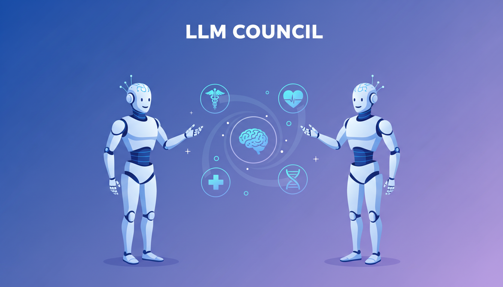
LLM Council - Multi-Agent Medical QA
Multi-agent debate framework with Generator-Skeptic-Judge and Angel-Devil architectures. Adversarial reasoning where agents challenge outputs: 94% MMLU accuracy, 67% PubMedQA, outperforming fine-tuned PubMedBERT through ensemble reasoning.
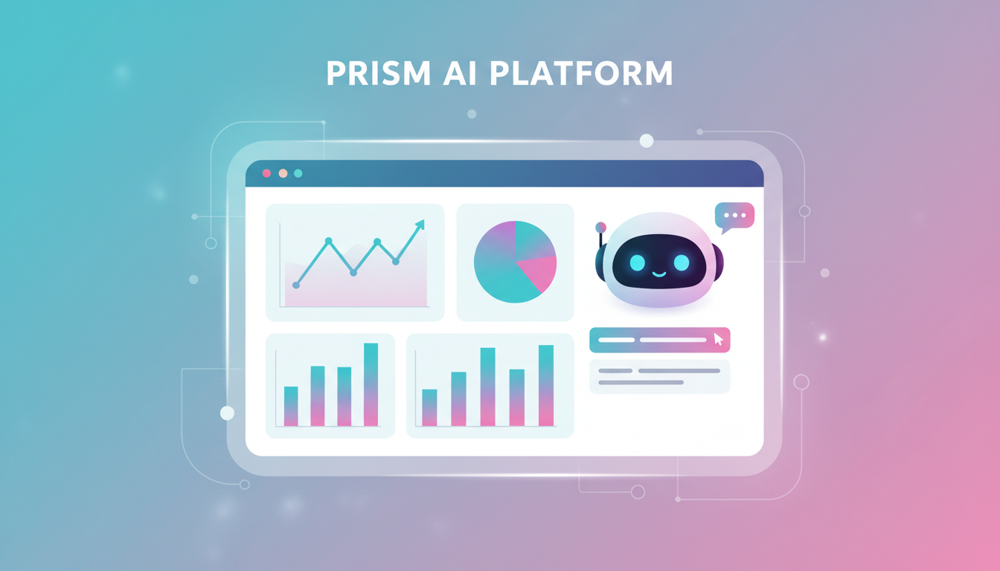
PRISM AI Platform
Interactive web dashboard with Claude Sonnet 4 chatbot on AWS Bedrock for NPI inventory optimization. VINTAGE-based demand-to-inventory matching engine for automated lot linkage. Natural language queries enable proactive intervention. Reduced unconsumed inventory by 30%, preventing COGS exposure.
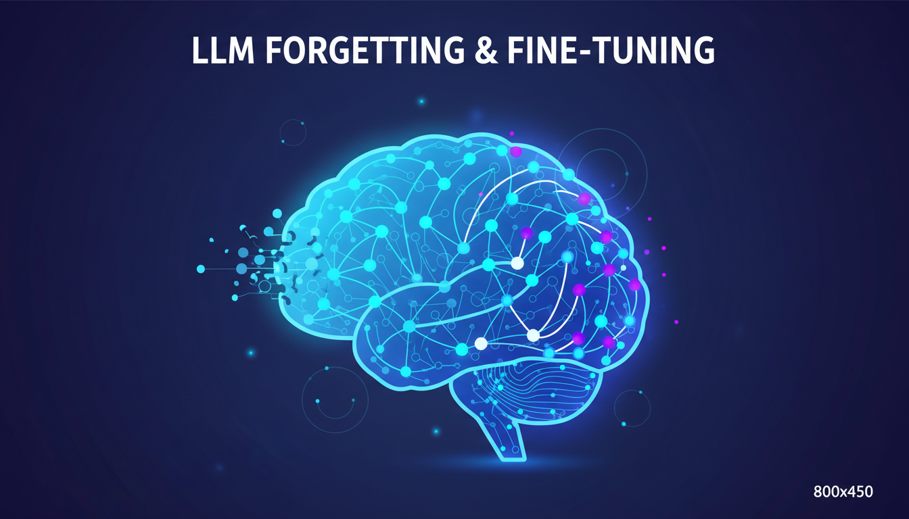
LLM Forgetting & Fine-Tuning Strategies
Systematic analysis of catastrophic forgetting in parameter-efficient fine-tuning (LoRA, Adapters, Prefix Tuning) on GPT-2 and 1B+ param models. 10-20% experience replay reverses forgetting by 33%, enabling continual learning in LLMs.
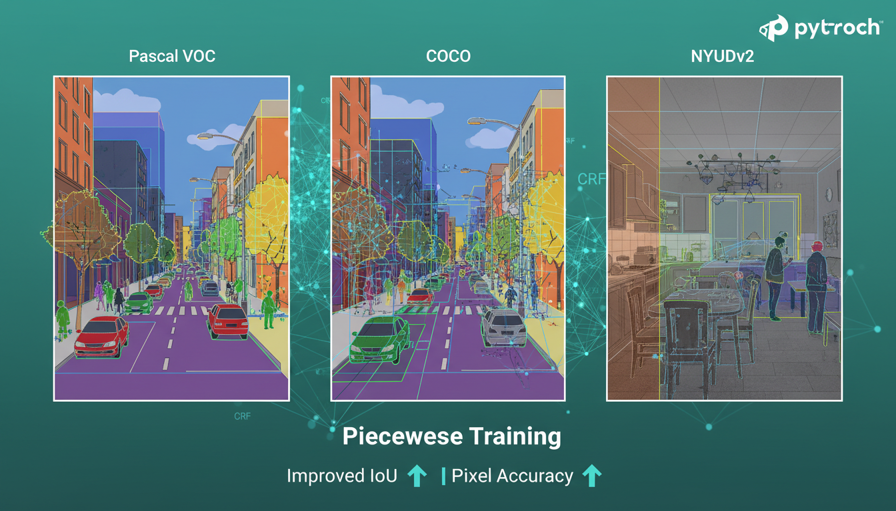
Semantic Segmentation - Piecewise Training
CRF-based segmentation in PyTorch on Pascal VOC, COCO, NYUDv2 datasets. Piecewise training improved IoU and pixel accuracy, applying conditional random fields for structured prediction in computer vision.
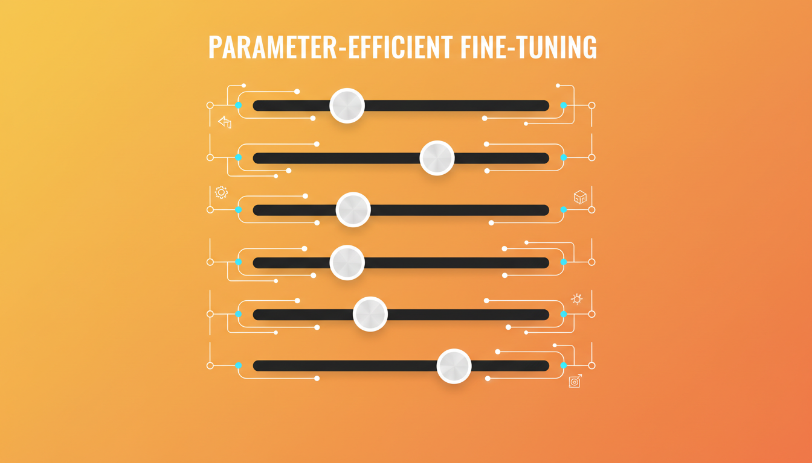
Parameter-Efficient Fine-Tuning of LLMs
Comparative evaluation of LoRA vs. AdapterP on OpenLLaMA-3B and TinyLlama-1.1B for mathematical reasoning. Quantified capacity constraints: LoRA 4.5% accuracy advantage, demonstrating efficiency-performance tradeoffs.
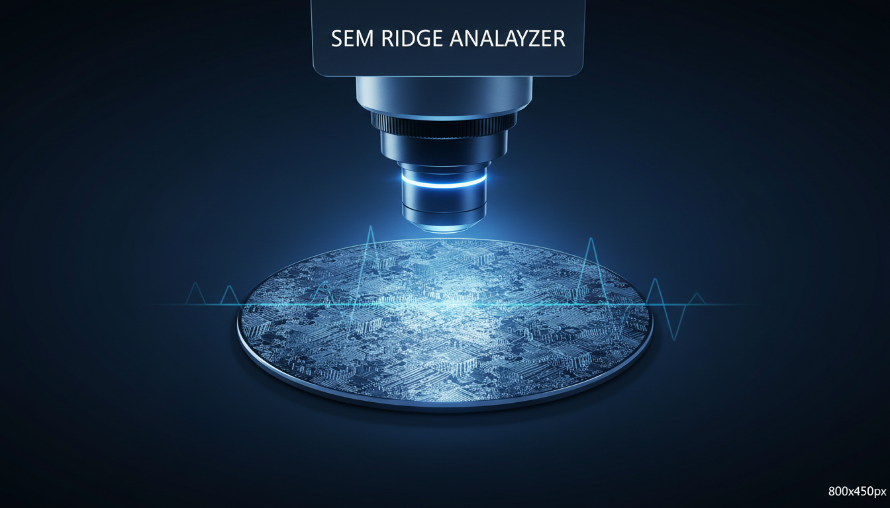
SEM Ridge Analyzer for Semiconductor
Computer vision tool for automated SEM metrology using 1D projection analysis and OCR. Automated measurement extraction from scanning electron microscope images for semiconductor quality control.
Safety Evaluation of Generative Driving Videos
Evaluation framework for AI-generated driving videos: temporal coherence, realistic vehicle physics, safety-critical scenario coverage for autonomous driving validation.
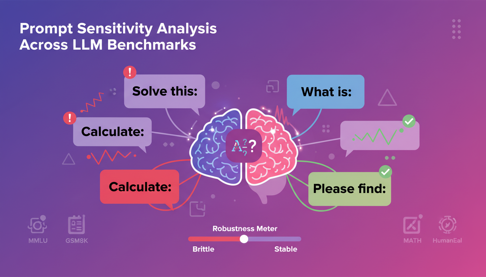
Prompt Sensitivity Analysis Across LLM Benchmarks
Systematic study quantifying LLM sensitivity to prompt variations. Evaluated robustness across multiple LLMs and benchmark tasks, identifying brittle prompt patterns and providing practical recommendations for reliable prompt engineering.
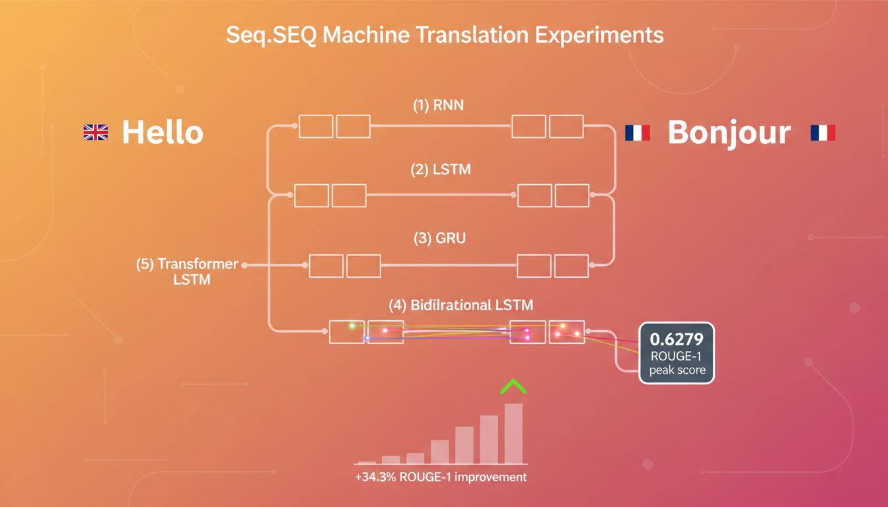
Seq2Seq Machine Translation Experiments
Comprehensive comparison of 5 encoder architectures (RNN, LSTM, GRU, Bidirectional LSTM, Transformer) for English-French translation. Attention mechanisms yield +34.3% ROUGE-1 improvement; Transformers achieved peak 0.6279 ROUGE-1 score.
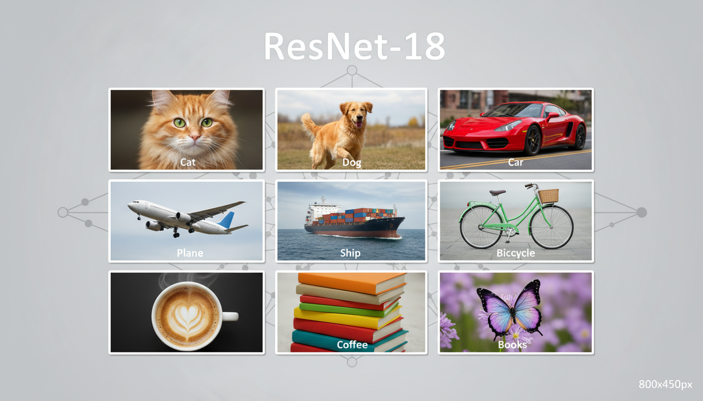
ResNet-18 on CIFAR-10
Image classification with residual networks achieving 95.1% accuracy on CIFAR-10. Implemented learning rate scheduling, data augmentation, and batch normalization for optimized training convergence.
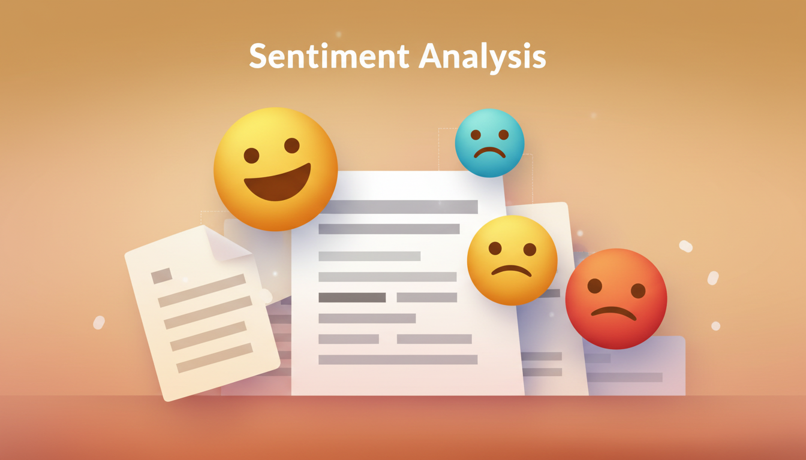
Sentiment Analysis using Neural Networks
Evaluated CNN, LSTM, FFN architectures on 50K IMDb reviews. Achieved 87.97% peak accuracy using CNNs with Adam optimizer. Demonstrated convolutional architectures outperform recurrent networks for sentiment classification.
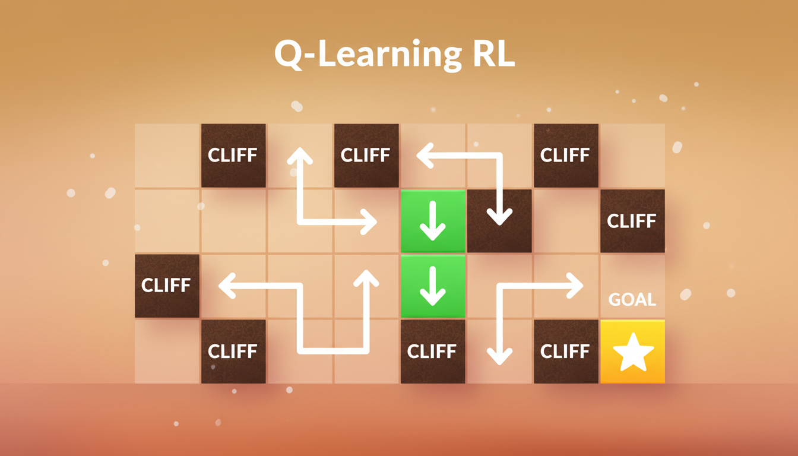
Q-Learning Reinforcement Learning
Q-learning algorithm for GridWorld navigation achieving 100% success rate with 76.8% fewer cliff falls. Demonstrated effective exploration-exploitation balance in model-free RL.
Contact Me
Feel free to contact me by submitting the form below and I will get back to you as soon as possible